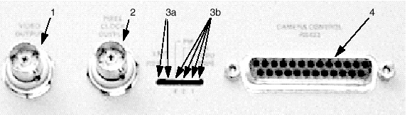
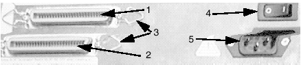
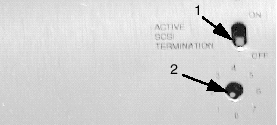
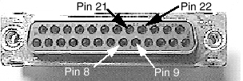
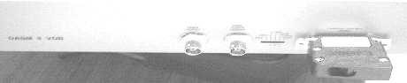
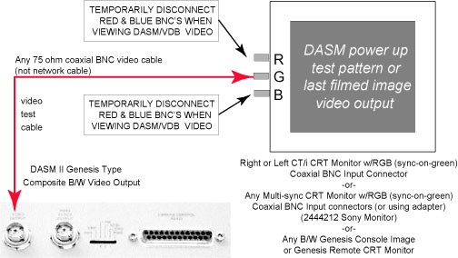

Proprietary to General Electric
Direction 5114045-800, Rev# 10
LightSpeed 4.X Service Information (Advanced)
Proprietary to General Electric |
Illustration 1: Analog DASM II, front view, showing connections and LEDs

VIDEO OUTPUT BNC CONNECTOR (75-OHM COAXIAL SOCKET)
Genesis format composite image video (or 3m vieb or other converter or amplifier if present)
PIXEL CLOCK OUTPUT BNC CONNECTOR (75-OHM COAXIAL SOCKET)
Genesis format pixel clock (external sync) to camera (required for long video cable runs or electrically noisy cable run environments)
LEDs
DASM IMAGE DATA TRANSFER STATUS LEDs
IMAGE READY: ON when DASM image data ready to acquire image
TRANSFER: ON when data is being acquired by camera
DASM STATUS/ACTIVITY LEDs (right to left)
POWER LED: ON whenever DASM power is applied (+5VDC)
CPU LED: Flashes DASM selftest heartbeat & when DASM is processing data
SCSI LED: Flashes whenever host sends commands/image data from DASM
AF LED: Flashes whenever DASM sends commands/status to/from camera
| NOTE: | The last three LEDs will also flash a power-up self-test error code sequence if the DASM internal power-up self-test fails. |
RS422 SERIAL CAMERA CONTROL PORT
25-Pin D-type socket, 1200 baud, 1 start bit, 1 stop bit, serial host control to camera (or Kieb or other serial converter, if present, on some camera installations)
| PIN 1 | CGND | DASM Chassis ground (default WW1 jumper) |
| PIN 7 | LGND | DASM Logic ground |
| PIN 8 | RX+ | Received serial status from camera (positive) |
| PIN 21 | RX- | Received serial status from camera (negative) |
| PIN 9 | TX+ | Transmitted commands to camera (positive) |
| PIN 22 | TX- | Transmitted commands to camera (negative) |
Illustration 2: Analog DASM II, rear view, showing connections and power switch

SCSI Input - 50-Pin Centronics
SCSI Loop-through OR Active slick type terminator required
SCSI Cable or Terminator Retainer Clips. Use the clips to prevent intermittent connections.
DASM AC Power Switch
O = Off
| = ON
AC Input Modular Plug (filtered)
Illustration 3: Analog DASM II (bottom view), showing SCSI settings

Termination - Shown in the “Off” position
SCSI ID - Shown set to “1”
For the loop-back test, set the following jumpers on the DASM/VDB RS422 25-pin D-type socket connector (refer to Illustration 4 for pin identification):
Pin 8 (RX+) to Pin 9 (TX+)
Pin 21 (RX-) to Pin 22 (TX-)
Illustration 4: DASM/VDB 25-pin FEMALE Connector (on DASM front)

Illustration 5: Analog DASM II Loop-back connector (at far right)

| NOTE: | Before You Start: Make sure that the film queue is empty or fully paused, or the commands will fail. |
CONNECT loop-back connector (2214163), per Illustration 5.
ENTER the ‘su’ command to become ‘root’:
{ctuser@rhap1}su
password:
CLEAR the DASM camera response buffer:
{ctuser@rhap1}clrsp /dev/dasm1
DISPLAY the DASM camera response buffer:
{ctuser@rhap1}rsp /dev/dasm1
Byte 0: 02 IDLE
Byte 128: 00
index: 0000 hex buffer size: 00f0 hex
CONFIRM that status line 110 is CLEARED:
110: 00 00 00 00 00 00 00 00 00 00 00 00 00 00 00 00 ...... (DASM Buffer Cleared)
ISSUE a single RQS command out serial port
{ctuser@rhap1}rqs /dev/dasm1
DISPLAY the DASM camera response buffer
{ctuser@rhap1}rsp /dev/dasm1
Byte 0: 06 IDLE ERROR
Byte 128: b0
index: 00f hex buffer size: 00f0 hex
INSPECT for TWO RQS entries at LINE 110:
If only ONE RQS, the loopback FAILED
If TWO RQS entries, the loopback PASSED
110:69 52 51 53 2d 52 51 53 0d 26 0a 0b b0 0c 06 00 iRQS-iRQS.&...... (RQS looped back OK-DASM serial port works)
{ctuser@rhap1}scsicontrol -ari /dev/dasm1
/dev/dasm1: Disk CDA DASM-VDB 1.0e
ANSI vers 1, ISO ver: 0, ECMA ver: 0; inquiry format is CCS
Device is not ready
REPEAT steps 3 through 8 to verify the test results.
If the test FAILS, the DASM serial port is BAD. Make sure the test jumpers are installed correctly.
If the test PASSES, the DASM serial port is working and is not the cause of a serial communication problem. Check external serial cables, any serial converters, camera serial port setup parameters. Move the loopback jumpers to the end of the 25 pin external serial cable and rerun the test to verify the cable/connectors (especially on new installations).
| NOTE: | When You’re Done: Use the reset command (as shown above) after the loop-back tests as necessary until the ‘showdasm’ command responds with normal output. The DASM gets confused by this test. |
Illustration 6: Connections for Analog DASM II Image Video Output Test

The video output of the Analog DASM II can be easily checked on CT/i by connecting a length of 75 ohm coaxial BNC cable from the DASM video output to the Green RGB input of either CT/i RGB monitor. Disconnect the RGB cable Red and Blue BNCs also to view the DASM video output. You can view the repeating DASM II power up test patterns or the last filmed image (or attempt). The software / DASM / camera filming loop will not run with DASM II video disconnected (camera reports “no signal” ALARM).
| NOTE: | A Genesis CRT can be connected as an inline filming “loop-through” monitor to allow “live” filming image viewing. Just connect it between the DASM video output and the camera video input using the CRT loop-through connectors and good quality 75 ohm coax. |